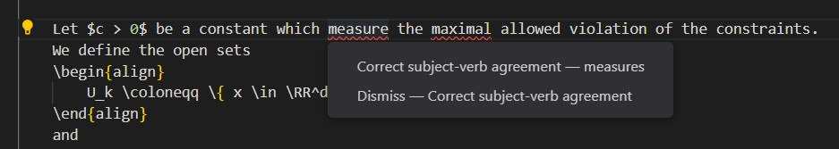
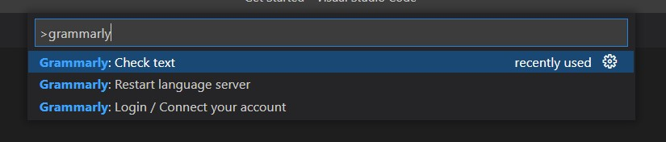

📑 Spellchecking in
As a non-native English speaker, automatic spelling and grammar checks are helpful and allow me to focus more on what I write instead of how. For
The example below shows how it suggests the right thing, even for a sentence with an inline equation: 
By the way, the Grammarly extension helped me avoid at least eight mistakes while writing this blog entry. 😄
How to use it?
Visual Studio Code is a modern, cross-platform, open-source editor. While initially sceptical, I am now a happy user of VS Code for Julia, Python, C++, HTML/JavaScript and
If you want to start using VS Code for your
- Install Visual Studio Code.
- Go to the extensions tab (e.g. File > Preferences > Extensions).
- Search for LaTeX Workshop and install it.
- On Windows, you might also have to install Perl, e.g. Strawberry Perl.[2]
- To compile a
document, just open it and click on Build LaTeX projectto compile, and useView LaTeX PDF fileto see the final document.
- Optionally: Check out the LaTeX Workshop page to learn more about the other cool features like auto-complete, live equation review and more.
- Search for [Grammarly] and install it.
- Press
Ctrl + Shift + Pand enter Grammarly. It should show you several options, in particularGrammarly: Login: Use this to log into your account,Grammarly: Check text: Spellcheck the current document.

That's it! 😎 I hope this quick tip helps you focus more on math. Feel free to write to me if the instructions are not detailed enough.
Of course, using a new editor is challenging, but to use VS Code, you just need to know exactly one thing:
Whenever you want to do something, press Ctrl + Shift + P to open the command palette; and then search for it.[3]
IDE = integrated development environment ↩︎
Perl is a programming language. The tool
mklatexis written in Perl and used by the LaTeX Workshop to compile yourdocuments with all citations and references in one go. ↩︎ Of course, there is a lot to explore in VS Code, like good git integrations, how to automate your steps, handy short-cuts and more. But to start, all you need is
Ctrl + Shift + P😉. ↩︎